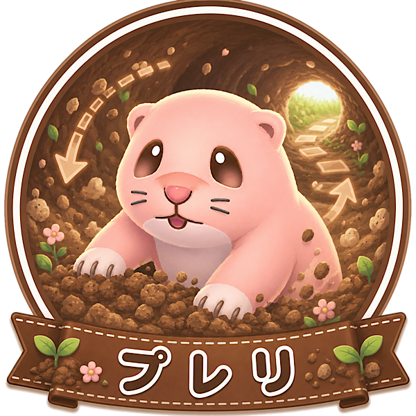

「ひらめき重視のテクニカル」タイプ
あなたは、普通のやり方だけでなく「こう使ったら便利かも」と考えるのが好きなタイプ。
少しクセのあるものでも、自分なりの使い道を見つけることに楽しさを感じます。
最初から簡単に扱えるものより、慣れるほど味が出るキャラや動きに惹かれやすい人です。
工夫がハマった時の気持ちよさを大事にする、ひらめき型のプレイヤーです。
プレリのトンネルは、うまく使えば移動ルートを大きく変えられるユニークなスキル。
置き場所や向きに工夫が必要ですが、ハマる場面ではかなり効率的に動けます。
シンプルな強さよりも、「自分だけの使い方」を見つけたい人と相性が良いキャラです。
テクニックや発想で差をつけたいあなたに向いています。